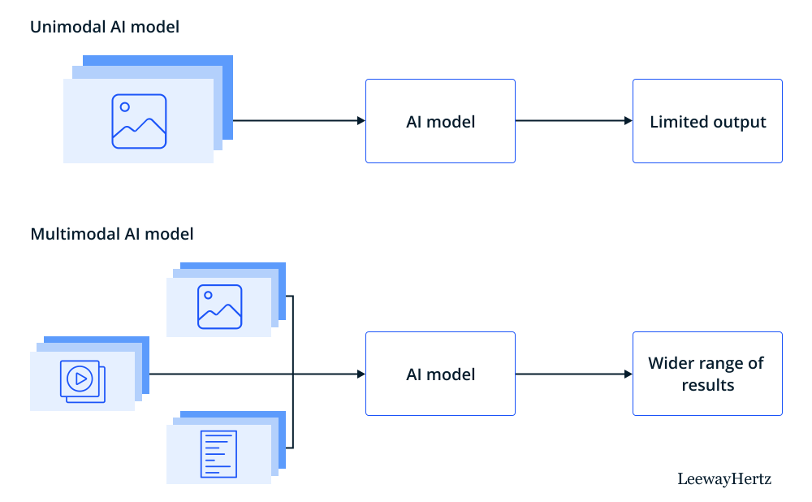
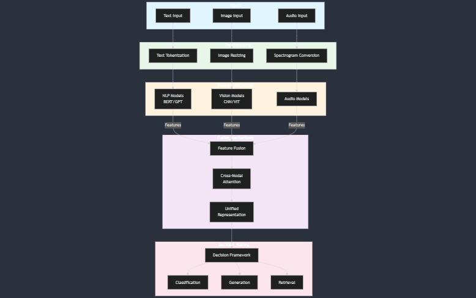
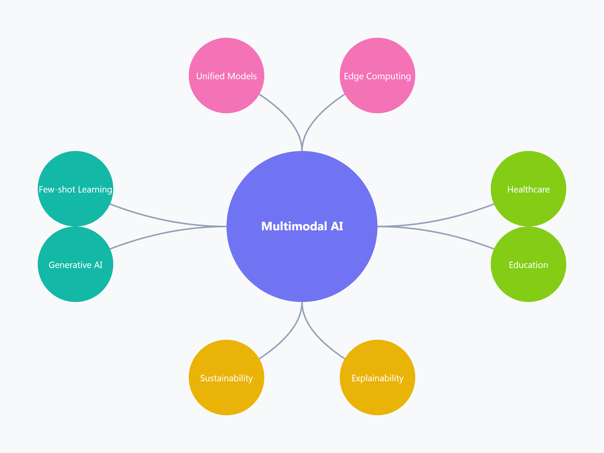

The Art and Science of Multimodal AI

Posted on December 23, 2024
Table of Contents
Abstract Introduction to Multimodal AI Understanding Data Modalities How Multimodal AI Works Key Applications of Multimodal AI Challenges in Multimodal AI The Importance of High-Quality Data Trends and Future of Multimodal AI ConclusionAbstract
Multimodal AI is an evolving field that integrates diverse forms of data—such as text, images, audio, and video—to create more intelligent, adaptive, and context-aware systems. This approach enhances machine learning models, enabling them to process complex inputs and perform tasks that require a deeper understanding of the world. The intersection of various data types allows for richer insights, more accurate predictions, and improved decision-making. However, despite its potential, multimodal AI faces several challenges, including data alignment, system complexity, and the need for high-quality inputs. As technology progresses, multimodal AI is expected to drive innovations across various sectors, making it a pivotal area of research and development. This blog explores the core principles, applications, challenges, and future directions of multimodal AI.

Introduction to Multimodal AI
Multimodal AI derives its name from the combination of two key concepts multi and modality. The term multi refers to multiple or several, while modality refers to a specific type or form of data.
In the context of AI, modalities can be thought of as distinct channels or types of information, such as text, images, audio, or video. Therefore, multimodal AI involves the integration and processing of data from multiple modalities to create a more comprehensive understanding of the world.
In traditional AI, systems are typically designed to handle one modality at a time, such as using text for natural language processing or images for image recognition. However, in real-world scenarios, understanding and interpreting information often requires multiple types of data. For example, to understand a scene in a video, a system might need to process both the visual content (images) and the accompanying sound (audio). Similarly, to engage in meaningful conversation, a system needs to understand both the spoken language (audio) and visual cues like facial expressions or gestures (images).
Multimodal AI aims to mimic this human ability to integrate various sources of information, allowing machines to solve complex tasks with greater accuracy and contextual understanding. By combining different modalities, multimodal AI can provide richer insights, improve decision-making, and perform more sophisticated tasks across a wide range of applications. This holistic approach makes multimodal AI a critical advancement in the field of artificial intelligence.
Understanding Data Modalities
Data modality refers to the type or format of data that is being processed. Different modalities capture different aspects of information, such as text, images, audio, video, and sensor data. Understanding the characteristics of each modality is essential for developing effective multimodal AI systems.
Real-world data is multimodal: In the early stages of AI research, the focus was typically on one modality at a time. Some studies concentrated on written language, others on images, and still others on speech. As a result, AI applications were often limited to processing a single type of data: a spam filter works with text, a photo classifier processes images, and a speech recognition system handles audio.However, real-world data is frequently multimodal. For example, videos typically include both an audio track and text subtitles, while social media posts, news articles, and much of the content found online often combine text, images, videos, and audio. This blending of different types of data is a key factor driving the development of multimodal AI systems to effectively manage and process such complex information.
How Multimodal AI Works
The process begins with input preprocessing, where raw data from each modality is prepared for analysis. For instance, text is tokenized, images are resized, and audio is converted into spectrograms. Once preprocessed, each modality undergoes feature extraction through specialized models. Natural Language Processing (NLP) models like BERT or GPT extract linguistic features from text, Convolutional Neural Networks (CNNs) or Vision Transformers analyze visual data, and audio models leverage spectrogram analysis to process sound.
The extracted features are then passed through fusion mechanisms to combine data across modalities. This integration can happen at different stages: early fusion merges raw data directly, intermediate fusion combines modality-specific features, and late fusion aggregates outputs from separate models. Advanced techniques such as cross-modal attention and transformers enable the system to align and contextualize these features effectively. For example, OpenAI’s CLIP aligns text and image embeddings in a shared space to enable tasks like image captioning and retrieval.
After fusion, the system employs decision-making frameworks that leverage the unified representation for specific tasks, such as classification, generation, or retrieval. Training these systems typically involves large multimodal datasets and objectives like cross-modal alignment or multitask learning. The success of a multimodal AI system hinges on its ability to process diverse inputs seamlessly, allowing it to achieve results that are far more sophisticated than unimodal systems. By harmonizing the art of feature extraction with the science of data fusion, multimodal AI systems unlock a richer understanding of complex real-world scenarios.
Key Applications of Multimodal AI
Multimodal AI, with its ability to process and integrate data from diverse sources, has unlocked transformative applications across various industries.
In the creative domain, generative AI systems like OpenAI's DALL·E and text-to-video models enable users to generate images or videos from textual descriptions, transforming art, marketing, and media production. In healthcare, multimodal AI plays a crucial role in diagnostics, combining medical images like MRIs with patient records to improve accuracy, while also advancing drug discovery and providing assistive technologies for individuals with disabilities. Autonomous vehicles rely on multimodal sensor fusion, integrating data from cameras, lidar, and radar to navigate safely and efficiently. Similarly, the entertainment and media sectors use multimodal AI for personalized content recommendations and interactive gaming experiences.
Challenges in Multimodal AI
Despite its transformative potential, Multimodal AI faces several challenges that stem from the complexity of integrating and processing diverse modalities. One significant issue is data heterogeneity, where different modalities (e.g., text, images, audio) have varying structures, formats, and temporal characteristics. Ensuring that these modalities align in a meaningful way requires advanced data fusion techniques and often extensive preprocessing. Another major challenge is data imbalance, where certain modalities may have richer datasets or higher-quality annotations than others, leading to skewed model performance. Additionally, missing or incomplete data within one or more modalities during inference complicates the system's ability to function effectively.
Model complexity is another hurdle, as multimodal AI systems often involve intricate architectures combining modality-specific components like CNNs for images or transformers for text. These models can be computationally expensive, requiring significant resources for training and deployment. The reliance on large, annotated datasets also poses a challenge, as creating such datasets is time-consuming, costly, and sometimes limited by ethical considerations or data privacy laws. Furthermore, multimodal models must address cross-modal alignment—the task of finding meaningful relationships between modalities—while avoiding noise or irrelevant connections, which can dilute model accuracy.
Robustness and generalization are additional concerns. Multimodal AI systems may struggle to generalize across domains or adapt to unseen scenarios, especially when trained on biased or domain-specific data. Interpretability is another critical challenge; understanding how models make decisions across modalities is far more complex than in unimodal systems, making debugging and trust-building difficult. Lastly, multimodal systems must ensure real-time processing capabilities, especially in applications like autonomous vehicles or surveillance, where latency can have critical consequences. Addressing these challenges requires innovations in model design, data management, and optimization techniques, along with an emphasis on ethical and sustainable AI development.
The Importance of High-Quality Data
High-quality data is the cornerstone of successful multimodal AI systems, as the performance and reliability of these models heavily depend on the quality of the input data. Clean, well-annotated, and diverse datasets ensure accurate learning, robust cross-modal alignment, and meaningful insights. Poor-quality data—such as noisy images, ambiguous text, or mislabeled annotations—can lead to biased or inaccurate predictions, undermining the system's effectiveness. Additionally, balanced datasets across all modalities are crucial to prevent over-reliance on one modality, ensuring fairness and generalization. By investing in high-quality data collection, preprocessing, and augmentation, multimodal AI can achieve superior performance, scalability, and trustworthiness in real-world applications.
Trends and Future of Multimodal AI
The field of multimodal AI is rapidly evolving, driven by advancements in models, data, and computational capabilities. One prominent trend is the development of unified multimodal models like OpenAI’s CLIP and DeepMind’s Flamingo, which seamlessly process and align multiple modalities within a single architecture. These models leverage transformers and attention mechanisms to improve cross-modal understanding. Another trend is scaling multimodal AI with increasingly large and diverse datasets, enabling models to handle more complex tasks such as video generation and multimodal reasoning. Generative AI tools, like text-to-video and text-to-audio systems, are expanding creative possibilities and enhancing user experiences in media and design.
The integration of multimodal AI with edge computing is gaining traction, enabling real-time processing in applications such as autonomous vehicles and wearable devices. Additionally, few-shot and zero-shot learning are becoming essential, allowing models to generalize to new tasks and domains with minimal data, which reduces dependence on extensive labeled datasets. The focus on multimodal explainability is also growing, as researchers work to make these systems more interpretable, transparent, and trustworthy.
Looking ahead, multimodal AI-human collaboration is expected to flourish, with AI systems acting as assistants in fields like healthcare, education, and creative industries. The future will also see greater emphasis on sustainable AI practices, optimizing multimodal models to reduce their energy consumption and computational costs. As multimodal AI becomes more integrated into everyday life, it holds the promise of creating systems that understand and interact with the world in ways that closely mimic human perception and reasoning, revolutionizing industries and enhancing human capabilities.
Conclusion
Multimodal AI represents a paradigm shift in artificial intelligence, enabling systems to process and integrate diverse types of data for richer understanding and more intelligent decision-making. By combining modalities such as text, images, audio, and video, multimodal AI opens new possibilities across industries, from healthcare and education to entertainment and autonomous systems. However, its development is not without challenges, including data quality, model complexity, and interpretability, which demand innovative solutions and careful consideration. As advancements in multimodal architectures, cross-modal alignment, and scalable computing continue to accelerate, the future of AI lies in building systems that mirror human-like perception and reasoning. Ultimately, multimodal AI has the potential to transform how we interact with technology, offering a more intuitive and interconnected digital experience that brings us closer to solving complex real-world problems.
References
[1] What is multimodal AI? -Cole Stryker
Visit Article
(accessed Dec, 2024).
[2] A Systematic Literature Review on Multimodal Machine Learning:
Applications, Challenges, Gaps and Future Directions -Arnab Barua, Mobyen Uddin Ahmed, sahina
Begum
Visit Article
(accessed Dec, 2024).
[3] Elsevier: Research trends in multimodal learning analytics: A systematic mapping study
-Hamza Ouhaichi, Daniel Spikol, Bahtijar Vogel
Visit Article
(accessed July 25, 2024).
[4] Datastax: What Is Multimodal AI? Everything You Need to Know -Bill McLane
Visit Article
(accessed Dec, 2024).